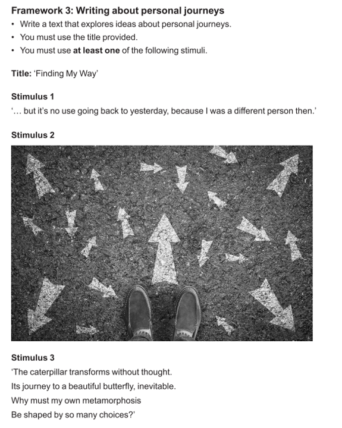

On this page
Personal Journeys
From the Study Design Explorations of ’life’ or biographical explorations - telling our stories, telling others’ stories, the problem of telling stories, appropriation of stories, who tells the stories and our history, missing stories, marginalised and elevated stories. Students could explore personal milestones, the effects of key events on their lives, or explore these ideas through the eyes of others. Students who have migrated can explore their stories of movement and disruption. They can explore the expectations of change and the language of a new place and culture.

Writing
Writing about personal journeys explores both the physical world and the internal world of oneself and others.
Reading and crafting texts about journeys provide opportunities to consider new places, perspectives, and self-discovery.
Personal journeys involve various experiences, including challenges, growth, and self-discovery.
Writing about personal journeys allows individuals to share unique experiences with others.
REMINDER: You have access to the exam generator and the prompt generator to practice your Section B skills.
Ideas
A personal journey can involve:
Travel to a physical place.
Psychological or emotional growth and change.
A combination of both, where physical travel leads to new insights.
Interior journeys may take a long time to occur due to significant events.
The most important aspect of a personal journey is change – the individual or group is fundamentally altered by it.
